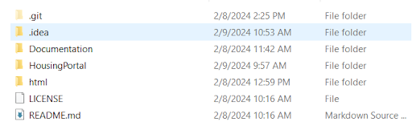

Latest released source code should be accessible on a public GitHub repository. The repository can be accessed here: https://github.com/423s24/Group_5
The directory structure will try to follow Django's filing structure. In our main project directory we will have Documentation, README.md, and the following HousingPortal project. Within the project are the application files in Portal, and the general application files in the subdirectory HousingPortal. The Portal folder should be the directory that will contain the files associated with the project i.e. html, css, etc.
Ensure that you have python installed. Various python packages are required to run this project. Postgresql is required as it is the database used for the project.
To create the database if not done already, run the following command in the terminal: “createdb -h localhost -p 6000 -U postgres -W housingportal”
This command creates the database on port 6000 where the project accesses it correctly, and as user “postgres”, if the user isn’t specified postgresql will attempt to log in as the default user.
This will create the database, now the database needs to be migrated, run “python manage.py migrate” then run “python manage.py makemigrations” and that should set up the database for use. This will create a clean database, and does not include any data entries.
To build the software, you must be in the main folder that contains the manage.py file. In the command line/terminal of the folder that contains manage.py run the following command: “python manage.py runserver”.
Undecided: If it starts then the test is complete
Undecided: run a file if it works then build and test are complete
Undecided: Push to github, new version released
Undecided: Have a list of bugs on Github?
Install PostgreSQL. Setup your database server with user ‘postgres’ and password ‘root’ (sudo -u postgres psql -c "ALTER USER postgres PASSWORD 'root';"). Create the database for the housing portal with the command “createdb -p 6000 -U postgres -W housingportal”. Once the database is created go to the outer HousingPortal folder in a terminal window and type “python manage.py migrate” to create all the tables needed for Django. If you change the model.py file you will need to run “python manage.py makemigrations” and then “python manage.py migrate”.
Go to the outer HousingPortal folder in a terminal window and type “python manage.py runserver”. It will be available in the browser at localhost:8000.
Go to the outer HousingPortal folder in a terminal window and type “python manage.py createsuperuser”. Follow the prompts to create a superuser.
Undecided: Source code should have the following required comments:
Comment explaining the files relation to the project as well as the function of the file
At minimum 1 comment per function to describe what the function does
etc.